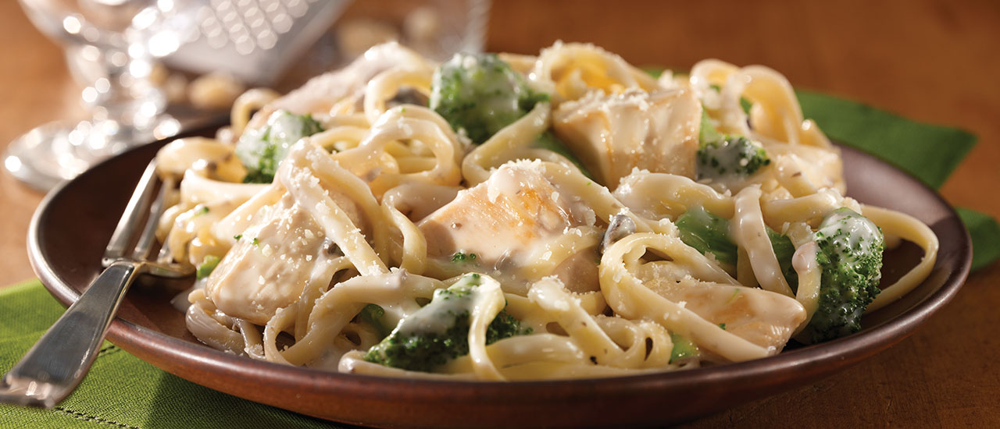

Chicken Broccoli
Fettuccine Alfredo
You might think traditional Italian cooking with sauce made from scratch has to be time consuming, but not this Chicken and Broccoli Alfredo. The entire recipe, including the classic creamy cheese sauce, comes together in just a half hour. Bites of white meat chicken, tender broccoli florets, and delicate strands of linguine are coated in a rich cheese sauce with mushroom bits for extra savory flavor. If you can boil water, you can cook this homemade Chicken and Broccoli Alfredo recipe for a fast weeknight meal everyone will enjoy.

Ingredients
- 8 ounces uncooked linguine or whole wheat linguine
- 1 cup fresh or frozen broccoli florets
- 2 tablespoons butter
- 1 1/4 pounds boneless, skinless chicken breast, cut into 1 1/2-inch pieces
- 1 can (10 1/2 ounces) Campbell’s® Condensed Cream of Mushroom Soup or 98% Fat Free Cream of Mushroom Soup
- 1/2 cup milk
- 1/2 cup parmesan cheese
Instructions
- Prepare the linguine according to the package directions in a 3-quart saucepan. Add the broccoli during the last 4 minutes of the cooking time. Drain the linguine mixture well in a colander.
- Heat the butter in a large skillet over medium-high heat. Season the chicken with salt and pepper. Add the chicken and cook until well browned and done, stirring often.
- Stir the soup, milk, cheese and linguine mixture in the skillet and cook until the mixture is hot and bubbling, stirring occasionally. Season to taste and serve with additional Parmesan cheese.